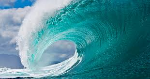
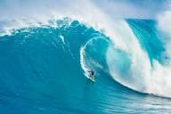
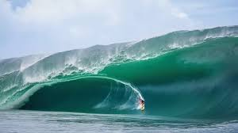
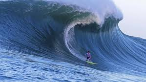
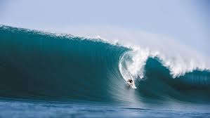
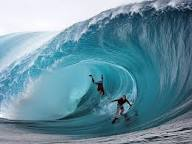
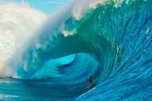
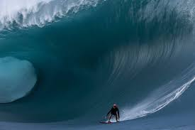

Australia
Las olas en Australia son mundialmente reconocidas por su tamaño, potencia y consistencia. Gracias a su extensa costa expuesta a diferentes sistemas de oleaje, el país ofrece desde olas ideales para principiantes hasta "olas mutantes" y rompientes gigantes reservadas para surfistas profesionales.

California USA
Las olas en California son reconocidas mundialmente por su consistencia, tamaño y variedad. Están impulsadas por potentes tormentas en el Océano Pacífico, ofreciendo desde olas largas y suaves para principiantes, hasta rompientes masivos y extremos para surfistas profesionales en ubicaciones como Mavericks.

España
El oleaje en España varía drásticamente según la zona costera, destacando tres regiones principales. El Mar Cantábrico (norte) ofrece olas potentes y constantes (2 a 7 metros). El Atlántico (Galicia y las Islas Canarias) es famoso por sus olas huecas, arrecifes volcánicos y rompientes gigantes. El Mediterráneo tiene un oleaje más suave y menor frecuencia, pero ofrece buenas condiciones en invierno.

Hawái
Las olas de Hawái son mundialmente famosas por su tamaño gigantesco, gran potencia y su característica formación de tubos perfectos sobre arrecifes de coral. Su altura y fuerza varían drásticamente dependiendo de la temporada y la ubicación, creando olas tanto para surfistas expertos como para principiantes.

Irlanda
Las olas en Irlanda se caracterizan por su gran tamaño, fuerza y consistencia, generadas por el choque directo de los oleajes del océano Atlántico Norte. Representan uno de los destinos más desafiantes del mundo para el surf de olas gigantes, con rompientes de categoría mundial y características muy técnicas.

México
Las olas en México varían drásticamente según la región y la temporada. En el Pacífico, predominan olas grandes y potentes, ideales para el surf, destacando Playa Zicatela en Oaxaca con tubos que superan los 10 metros. En el Golfo de México, el oleaje es generalmente más tranquilo y de menor altura, aunque se intensifica con frentes fríos o ciclones.

Perú
Las olas en Perú son reconocidas a nivel mundial por su longitud, consistencia y calidad. Gracias a las corrientes frías del Pacífico y a los vientos del Anticiclón del Pacífico Sur, la costa peruana ofrece condiciones inigualables para el surf y un comportamiento oceanográfico muy particular.

Portugal
Las olas en Portugal son reconocidas mundialmente por su constancia, variedad y tamaño. Están impulsadas por la exposición directa a las fuertes marejadas del Océano Atlántico y la diversidad de su costa. Sus características principales varían desde tubos perfectos hasta olas gigantes de más de 30 metros.